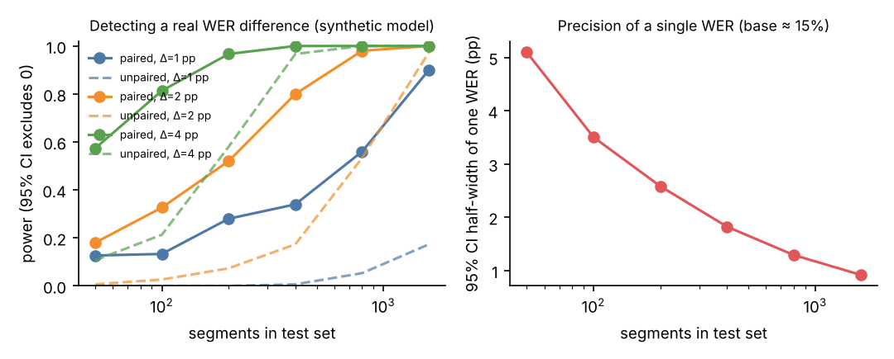

Swapping Speech-Recognition Models and Inference Engines with Confidence
Evaluation techniques, algorithms, best practices, and a decision framework for Arabic / English code-switched transcription
What this document is
A technical guide and decision report. It explains how to measure whether a candidate model, inference engine or serving configuration is
accurate enough, robust enough and fast enough to replace what you run today, how to quantify the uncertainty in that answer, and how to write the decision down so that it is reproducible.
It is written to be used with Mizan, but every technique is tool-independent.
What this document is not
It contains no benchmark results for your audio and does not rank Jais-ASR, Cohere Transcribe Arabic, Whisper or any engine. Public rankings do not transfer to your data;
the report says why, and gives you the procedure and the decision template that produces a defensible ranking on your gold set. Numbers shown in worked examples and simulations are labelled as such.
Version 1.0 · 12 November 2026 · Companion to the Mizan evaluation workbench
Evidence labels used throughout: verified checked against a primary source during preparation · vendor-reported published by the model/engine author, not independently reproduced ·
community blog / forum / issue-tracker guidance · simulation computed for this report with stated assumptions · practice widely used engineering practice, not a cited result.
Contents
1Executive summary and the decision in one page
2Framing a swap: what exactly is being changed?
3Golden data: the foundation everything rests on
4Text normalization
5Accuracy metrics and algorithms
6Statistical rigor: knowing whether a difference is real
7Robustness, slices and failure-mode testing
8Inference engines: what changes when you change the runtime
11Decision framework and the technical report template
12Why this or that: reasoning about the candidates
13How Mizan covers this, and where it does not (yet)
AFormula cheat-sheet
BSwap checklist (printable)
CReferences and evidence quality
1. Executive summary and the decision in one page
Replacing an ASR model or inference engine is a statistical decision under uncertainty with an operational constraint set. The failure modes are well known: comparing numbers produced under different text normalization;
trusting a public leaderboard that does not resemble your audio; declaring a 0.5-point WER gap "better" with a few hundred words of test data; evaluating accuracy on one engine and speed on another; and discovering in production that
the faster configuration silently changed the output (VAD chunking, dropped decoding safeguards, lower precision) or hallucinates on silence.
The ten rules this report argues for
Separate the three things you can change — model, engine, serving/decoding configuration — and test them in a design that lets you attribute any difference to one of them (§2, §8).
Own the reference. Build a frozen, versioned, stratified gold set from your audio, and measure how much two humans disagree on it; that is your noise floor (§3).
Fix and record the normalizer. The same two transcripts can differ by tens of points of WER depending on diacritics, hamza, digits and punctuation rules. Version it, print it, report raw and normalized (§4).
Use corpus-level metrics, never an average of per-segment error rates, and report more than WER: CER, MER, script-split WER, insertions (loops), deletions (dropped speech), hallucination on non-speech (§5).
Report intervals, and compare systems with paired tests. A swap is a non-inferiority claim with an explicit margin, not "the number is lower" (§6).
Slice before you decide. An aggregate win can hide a regression on code-switch points, a dialect, short segments, noise or silence (§7).
Re-evaluate whenever the engine or decoding config changes, even for the same weights: batched/VAD pipelines, quantization and decoding parameters change outputs (§8).
Load-test with the same adapter and data, in a way that does not hide the tail: understand closed- vs open-loop generators and coordinated omission (§9).
Gate first, score second. Hard constraints (privacy, licence, hardware fit, SLO, safety) eliminate candidates; a weighted matrix only ranks survivors, and its weights get a sensitivity analysis (§11).
Ship in stages — shadow, canary, rollback criteria — and keep the resolved configuration of every run so the decision is reproducible (§10).
The decision rule in one paragraph
Adopt candidate C over incumbent I when: (a) on the frozen gold set, the paired 95% upper confidence bound of WER(C) − WER(I) is below your pre-agreed margin δ (non-inferiority), on the overall set and on every pre-declared critical slice, or C is significantly better where you claim improvement; (b) safety metrics (hallucination on non-speech, deletion rate, repetition loops) are no worse than a pre-agreed bound; (c) at your target concurrency, p95/p99 latency meet the SLO with errors below budget and the sustained throughput covers peak load with headroom; (d) hard constraints hold; and (e) a shadow run on live traffic shows agreement with the incumbent consistent with the gold-set result. Everything in this report is in service of making each clause measurable.
Evidence-based observations that shape the advice
The Open ASR Leaderboard paper reports that Conformer-encoder / transformer-decoder systems achieve the best average WER while CTC and TDT decoders offer superior inverse real-time factor (RTFx) — accuracy and speed trade off along architecture lines, so a single "best" does not exist. verified
Whisper-family hallucination is a measured phenomenon: an audit found roughly 1% of sampled transcriptions contained hallucinations, 38% of those with explicit harms, with silences and long non-vocal stretches as likely triggers; the other commercial systems audited did not show it. verified Non-speech test cases are therefore mandatory, not optional.
faster-whisper's own documentation states its batched mode uses VAD chunking and ignores some decoding options; speed numbers it publishes are its own. Accuracy must be re-measured for any such pipeline. vendor-reported
Bisani & Ney showed that confidence intervals on WER are wide and that most reported improvements in the literature were not much larger than the standard error; resampling at the speaker level gives wider (more honest) intervals than resampling sentences. verified
A closed-loop load generator under-reports tail latency during stalls (coordinated omission). In the simulation in §9, an identical 2-second stall yields p99 = 20 ms under a closed-loop client and p99 = 1,840 ms under an open-loop schedule. simulation
2. Framing a swap: what exactly is being changed?
"Swap Whisper for Jais-ASR on vLLM" bundles at least five changes. Treat them as separate factors:
Latency distribution, saturation point, error rate; sometimes accuracy (batch-size-dependent numerics)
Load-test grid; re-check accuracy at the chosen setting
Confounding is the default
If you compare "incumbent = Whisper on faster-whisper with VAD" against "candidate = Jais-ASR on vLLM without VAD", any accuracy or speed difference is a mixture of model, engine and pipeline effects. A decision memo that cannot say which factor caused a gain will not survive the first regression. Use a factorial grid where you can afford it (e.g. 2 models × 2 engines), and at minimum run each candidate with the incumbent's pre/post-processing as well as its own.
Three kinds of claim, three kinds of test
Claim
Statistical form
Typical use
Superiority — "C is more accurate than I"
Paired CI of the difference excludes 0 in the favourable direction
Model upgrade justified by accuracy
Non-inferiority — "C is no worse than I by more than δ"
Equivalence — "same weights on a new engine give the same results"
CI of the difference lies within ±δ (two one-sided tests), and output-level agreement is high
Engine migration
Choosing δ is a business decision made before looking at results (for example "no more than 0.5 percentage points absolute WER overall and 1.0 on any critical slice"). There is no universal value; make the number explicit and record who agreed to it.
3. Golden data: the foundation everything rests on
3.1 What a gold set must be
Representative. Sample from the audio you will actually transcribe (channel, codec, noise, dialects, domain vocabulary, speaker mix). A public benchmark measures the benchmark.
Stratified and labelled. Record strata you will want to slice by: language mix (ar, en, mixed), duration bucket, dialect, noise/SNR bucket, domain, speaker. Strata must exist before evaluation so slices are pre-declared rather than fished for.
Frozen and versioned. A gold set is an immutable snapshot (v1, v2 …). Never edit v1 after a decision was made on it; fix errors in v2 and re-run.
Split. Keep a development portion (for choosing decoding settings, normalizer details, thresholds) and a locked test portion touched only for the final decision. Tuning on the test set inflates the winner.
Includes non-speech. Silence, music, hold tones, breathing, DTMF, cross-talk. These are the segments where hallucination appears (§7).
Includes a long-form track. Segment-level evaluation hides chunking, stitching and timeout behaviour. Keep a small set of whole files evaluated end-to-end (§8.4).
3.2 How big?
Size is set by the smallest difference you must detect and by how correlated segments are. In a simulation (synthetic per-segment difficulty shared across systems; mean ~12 words/segment; baseline WER ≈ 15%; paired bootstrap, 95% CI excludes 0) the probability of detecting a true absolute WER gap was:
@@POWER_TABLE@@

Figure 1. Left: power to detect a true WER difference using a paired bootstrap (solid) versus independent per-system intervals (dashed). Right: half-width of one system's 95% interval versus test-set size. Synthetic model; use your own pilot data to size the real set (Mizan's bootstrap on a pilot run gives the variance).
Take-aways from the simulation (assumptions apply)
Pairing is worth roughly a 4× larger test set. Because both systems face the same hard segments, their errors are correlated and the paired difference has far lower variance than two independent intervals. Never eyeball two overlapping per-system intervals; compare paired.
A 2-point gap needed on the order of 400 segments for ~80% power when paired, but ~1,600 when judged by independent intervals; a 1-point gap needed well over 800 even when paired.
A single system's WER at ~800 segments still carries about ±1.3 points. A "0.3 point improvement" on a few hundred segments is noise.
Practical sizing recipe: (1) run both systems on a pilot of 150–200 segments; (2) compute the paired bootstrap SD of the WER difference; (3) required segments scale as (SDpilot / SEtarget)2 × npilot, with SEtarget = δ / 2.8 (z0.975 + z0.80 = 1.96 + 0.84, assuming the true difference is zero) for 80% power on a one-sided 97.5% non-inferiority bound. Treat as an estimate and re-check after the real run.
3.3 Reference quality and the human noise floor
A reference is itself a noisy measurement. If two competent annotators transcribing the same audio disagree at, say, 5% WER (after the same normalization), then differences between systems below that level are not interpretable as accuracy differences. Therefore:
Run blind double annotation on a sample (Mizan: IAA track, default 5%). Report human-vs-human WER/CER and treat it as the noise floor.
Require reviewer ≠ author and keep comment threads; disagreement patterns (spelling variants, dialect words, numbers) feed the normalizer (§4).
Dialectal Arabic has no single standard orthography; many valid spellings exist. Where disputes are systematic, either normalize them (documented rule) or use multi-reference scoring (see PolyWER and multi-reference WER, §5.6).
Reference bias from machine drafts
Bootstrapping references by correcting a model's draft is efficient, but annotators anchor on what they see: the drafting model's idiosyncratic spellings, word choices and omissions survive review more often than competing systems' variants. The drafting model then looks better on the gold set than it would against references written from scratch. practiceMitigations: (1) draft with a system that is not a candidate, or draw drafts from several systems/ROVER-style combination; (2) keep a blind from-scratch subset (the IAA track) and check that the candidate ranking agrees on it; (3) record the drafting model per segment (Mizan stores source = machine:<endpoint>) and report results with that model's drafted segments excluded as a robustness check.
3.4 Contamination and leakage
If a candidate was trained on your public test data (or on audio overlapping it), its score is inflated. Prefer private, recent in-house audio; for any public data, check the model card and training-data statements; and treat a model that is dramatically better on public sets than on your private set as a contamination warning.
3.5 Annotation protocol essentials
Write a style guide before annotating: verbatim vs clean (fillers, repetitions, false starts), how to write numbers, English words (Latin vs Arabic script), acronyms, dialectal words, unintelligible markers, overlapping speech.
Decide whether references carry diacritics (tashkeel). Most systems do not output them consistently; the normalizer will strip them (§4), but the policy must be written down.
Store timestamps, flags (no_speech, music, overlap, unintelligible, truncated) and language spans on every segment; exclude unintelligible from scoring by policy and report the count.
Treat segmentation as part of the reference: segment boundaries that cut words (forced splits) create artificial errors. Flag and count truncated segments.